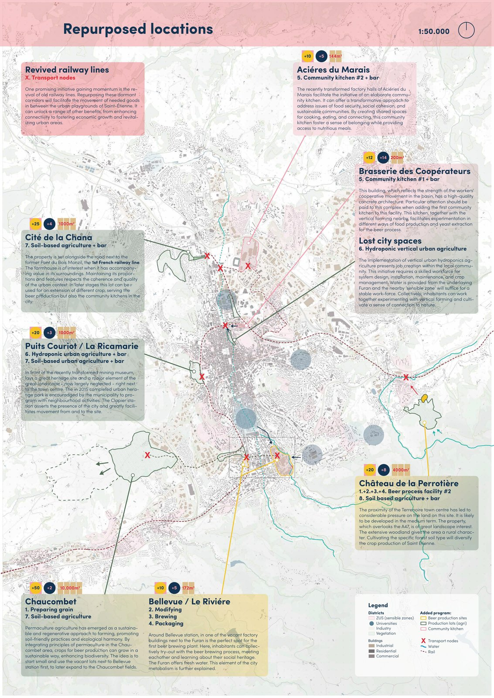
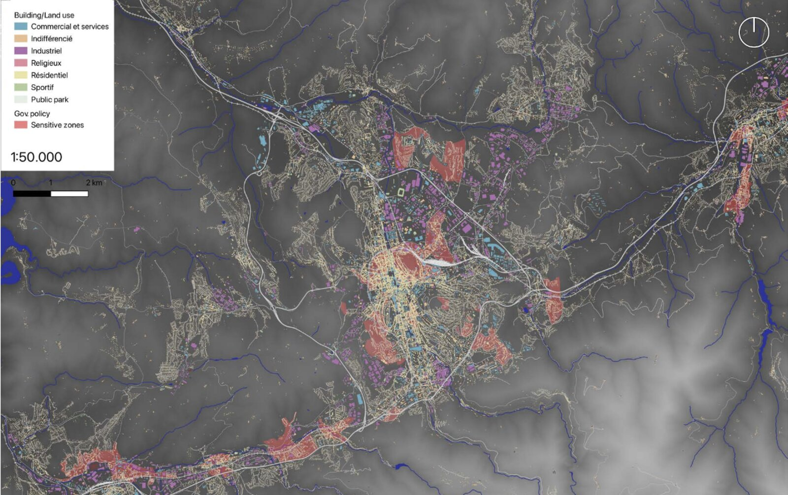
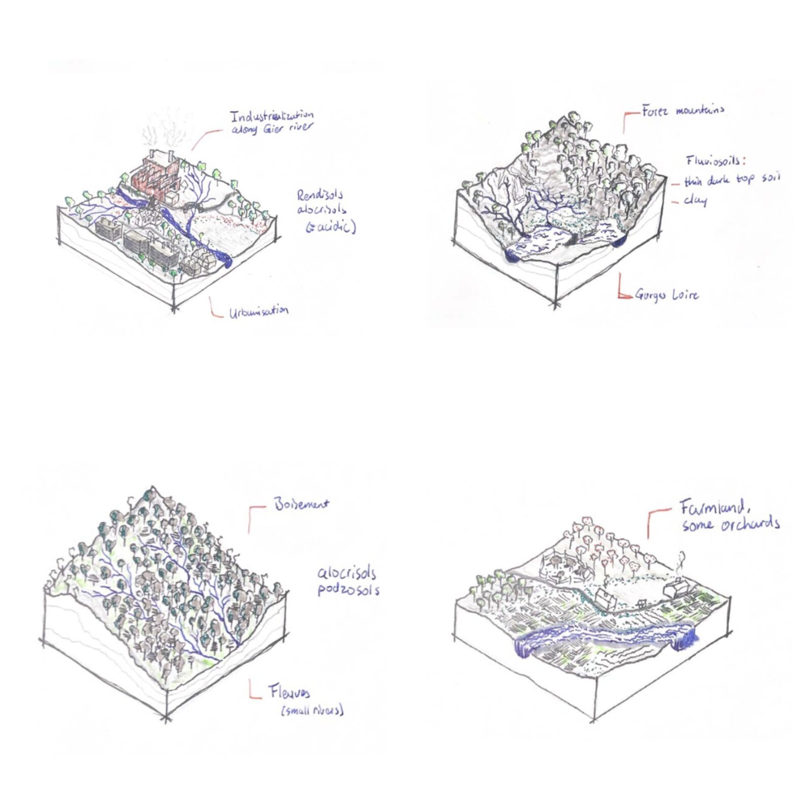
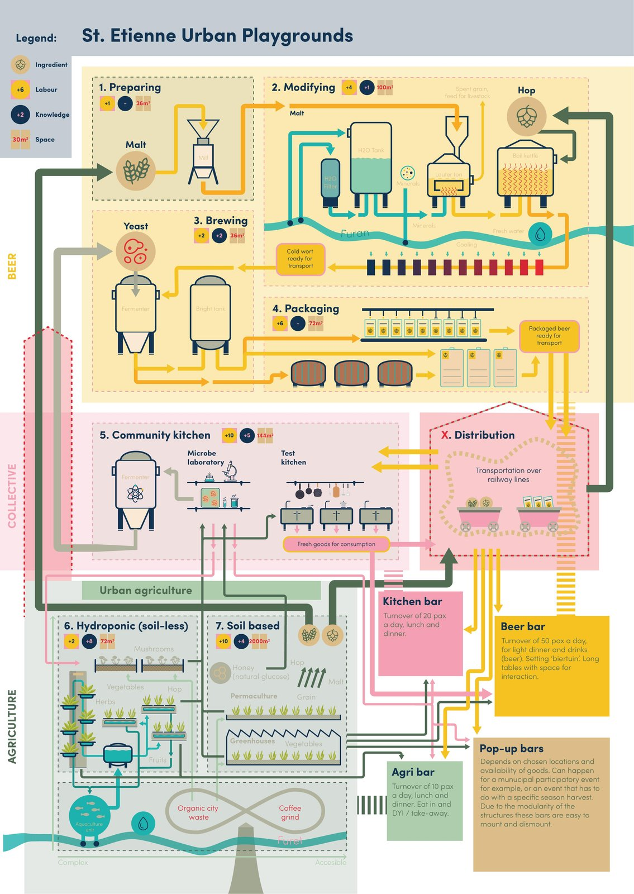
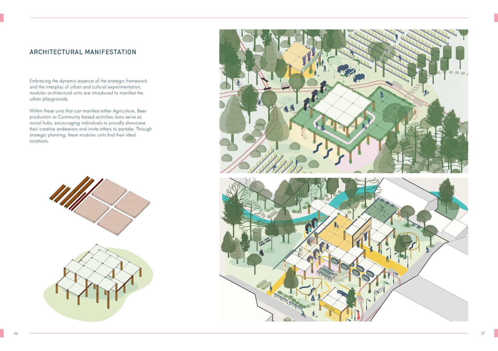
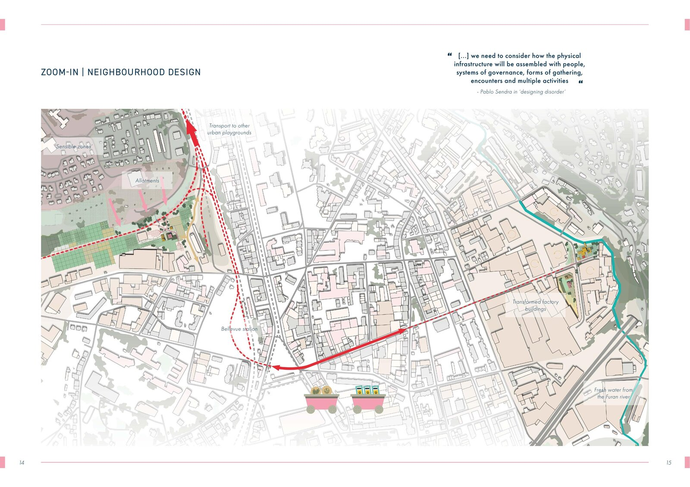
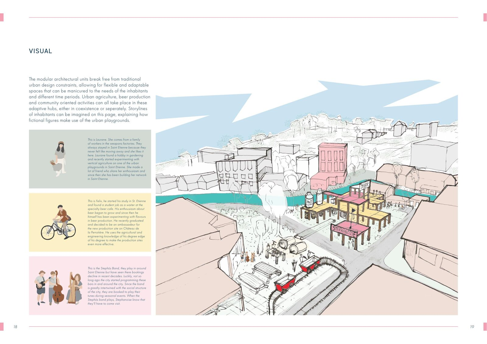
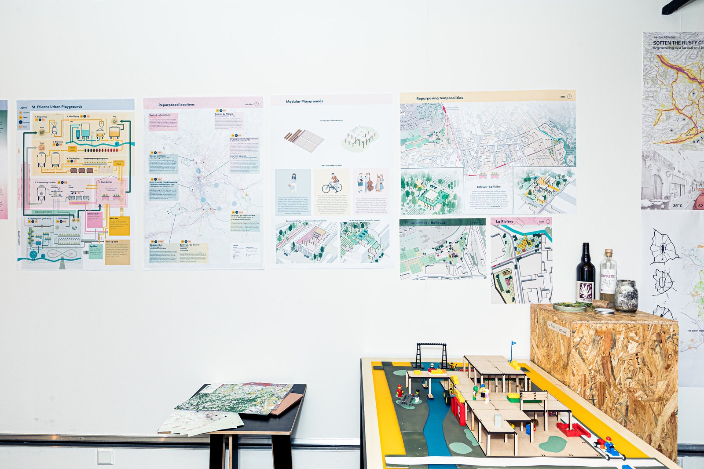

Urban playgrounds for a shrinking Saint-Étienne.

Saint-Étienne is shrinking. In this 16-week regional studio at the Academy of Architecture Amsterdam we explored what urban and landscape design can heal in weakening metropolises. I split my research in two: the visible and the invisible. Soil, vegetation and vacancy on one side; the culture of the Stéphanois on the other. Three findings stuck. The city imports nearly all its food, residents keep starting successful urban experiments despite the decline, and the local drink is beer, not wine.
My proposal stacks these into a citywide framework of urban playgrounds: vacant plots where agriculture, brewing and community life reinforce each other, linked by revived railway lines and modular structures that adapt as needs change. Design for the unknown, the unexpected.
Tutors: Lea Soret, Robert Younger, Philippe Allignet.






